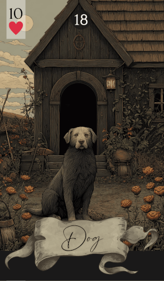

第 18 张 · 红桃 10
狗
忠诚
友谊
支持
信任
情义
狗象征忠诚、友谊与靠得住的支持。这张牌讲的是把人与人系在一起的那些联结——信任、陪伴，以及彼此的尊重。
免费抽牌 →
解读中，狗代表你生活里确实存在的忠诚与支持。它常指一位可靠的朋友或伙伴，顺境逆境都在你身边。留意那些建立在信任与尊重之上的关系——支持是自然给出的，理解也是双向的。狗要你想一想：你的心向着谁，对方又是怎么回应的。
狗是一张关于友谊与群体的牌。它看重那些让人觉得安全、被珍视的联结，常指向生活中一直稳定支持你的人。与其他牌搭配时，狗会把焦点拉到这些关系上，凸显协作、配合与共同目标的分量。
在感情占卜中，狗代表一段扎根于信任与忠贞的关系。对方不只是爱人，也是真正的朋友。若你单身，它可能提示某段亲近的友谊会往前走一步。承诺与忠诚被摆在最前面——长久的联结正是由这两样撑起来的。
在事业上，狗意味着一个能托住人的工作环境，或几位靠得住的同事。它可能指向团队协作，也可能指一段师徒关系。眼下对团队或机构的忠诚很要紧，而这份忠诚多半会得到回应。这张牌鼓励你养护好这些联结，它们会带来职业上的成长。
狗建议你对生命中要紧的人保持忠诚与支持。相信你已经建立的那些联结，它们就是你的底气。做事可靠、前后一致，把关系经营在相互尊重与忠诚之上。要记得，联结的牢固程度，往往就是你成事的地基。
每张雷诺曼牌都靠邻牌获得深度，而狗尤其在问：「忠诚，是对什么而言？」答案取决于它身旁的牌。
传统牌面上是一只亲人而专注的狗，说的正是忠诚与友谊。狗的形象不只让人想到可信，也让人想到有伴的快乐。它提醒我们：有些联结经得住依靠，有些支持从不动摇。